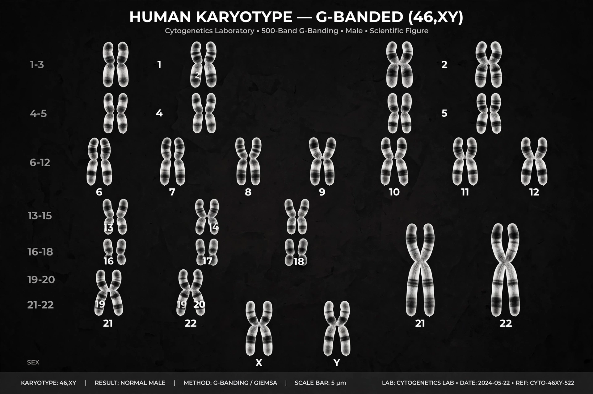

Chromosome

[Image: a human karyotype: 23 pairs of chromosomes arranged by size, stained bands visible on each]A chromosome is a long DNA molecule with part or all of an organism's genome, packaged with proteins — chiefly histones — that compact it and help control its activity. In eukaryotes, chromosomes sit in the cell nucleus and become individually visible, as condensed X-shaped bodies, during cell division. Bacteria typically carry a single circular chromosome in the cytoplasm.
Humans have 46 chromosomes in most body cells: 22 pairs of autosomes plus two sex chromosomes (XX in females, XY in males), one set inherited from each parent. The number varies enormously among species and does not track complexity — some ferns have hundreds. Each chromosome carries hundreds to thousands of genes arranged along its length.
Structure
A replicated chromosome consists of two identical sister chromatids joined at the centromere, with protective caps called telomeres at the ends. DNA winds around histone proteins to form chromatin; tighter packing (heterochromatin) silences genes, looser packing (euchromatin) allows expression. During meiosis, homologous chromosomes exchange segments by crossing over, shuffling alleles into new combinations.
Abnormalities
Errors in chromosome number or structure cause well-known conditions: an extra copy of chromosome 21 causes Down syndrome, and missing or extra sex chromosomes cause Turner and Klinefelter syndromes. Large rearrangements — deletions, duplications, inversions and translocations — can disrupt genes and are implicated in many cancers. The study of chromosomes is called cytogenetics.